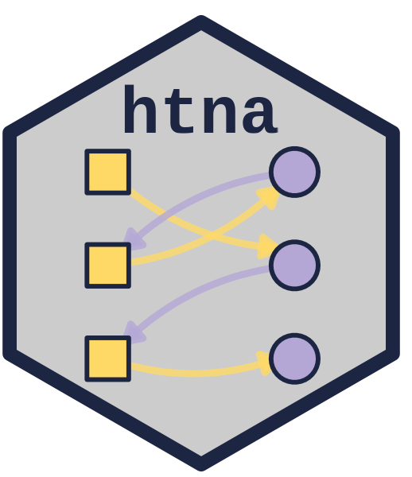
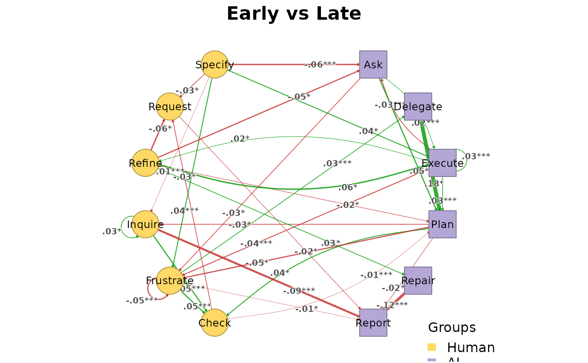

Compare networks edge by edge with a Bayesian model
Source:R/bayes_compare_htna.R
bayes_compare_htna.Rdbayes_compare_htna() compares two heterogeneous transition networks,
for example of early and late sessions, edge by edge with a Bayesian
model: how much more or less likely a human request is to be followed by
an AI plan in one network than in the other, and how precisely the data
estimate that difference. The model treats the transitions out of each
code as a multinomial draw with a Dirichlet prior, so every transition
probability has a Beta posterior. For each edge it reports the posterior
mean difference, a credible interval, and the probability that the
difference lies on its side of zero. An edge whose source code has few
outgoing transitions gets a wide interval even when its probabilities
look far apart.
bayes_compare_htna() runs Nestimate's bayes_compare() with the actor
partition kept. It compares two htna networks built with
method = "relative" or "frequency" on the same codes, or every pair
of cohorts of a grouped network. An edge is flagged as credibly
different when its interval excludes zero and its mean and nearest bound
pass mean_threshold and bound_threshold; no correction is made for
testing many edges, and every transition is treated as an independent
draw, so the nesting of transitions in sessions is ignored. It returns a
net_bayes object, or one per cohort pair for a grouped network.
The permutation test of permutation_htna() respects that nesting and
asks whether a difference exceeds chance; compare_htna() gives
descriptive similarity measures and the differences per actor pair.
plot_htna_diff() draws the result.
Arguments
- x, y
Two htna networks, or an
htna_groupinxwithy = NULL, in which case every pair of cohorts is compared. Networks that do not hold the same codes are compared over the codes of both; a code a network lacks has no transitions in it.- ...
Settings:
prior(Dirichlet concentration, default 0.5),draws(Monte Carlo draws, 10000),ci(credible level, 0.95),mean_threshold(0.01),bound_threshold(0.001) andseed.
Value
For two networks, an object of class
c("net_bayes", "netdifference", "net_permutation") with print(),
summary() and plot() methods. For a grouped network, a named list
of class c("net_bayes_group", "list") with one result per cohort
pair (for example "Early vs Late"). summary() returns a data frame
with one row per edge (and pair) and columns including from, to,
weight_x, weight_y, diff, effect_size, ci_lower, ci_upper,
p_difference, p_value and sig. Differences are x - y; in a
grouped comparison x is the first cohort of the pair.
Examples
data(human_ai)
grp <- build_htna(human_ai, actor_type = "actor_type", group = "phase")
#> Metadata aggregated per session: ties resolved by first occurrence in 'cluster' (24 sessions), 'actor_type' (9 sessions)
#> Metadata aggregated per session: ties resolved by first occurrence in 'session_date' (1 sessions), 'cluster' (18 sessions), 'actor_type' (15 sessions)
bc <- bayes_compare_htna(grp, draws = 200, seed = 1)
head(summary(bc))
#> comparison from to weight_x weight_y count_x count_y
#> 1 Early vs Late Ask Ask 0.01861472 0.01851852 21 22
#> 2 Early vs Late Ask Check 0.06883117 0.05802469 79 70
#> 3 Early vs Late Ask Execute 0.03333333 0.01193416 38 14
#> 4 Early vs Late Ask Frustrate 0.09913420 0.13127572 114 159
#> 5 Early vs Late Ask Inquire 0.05411255 0.07201646 62 87
#> 6 Early vs Late Ask Plan 0.43160173 0.38395062 498 466
#> diff effect_size ci_lower ci_upper ci_width p_difference
#> 1 0.0000962001 0.01609597 -0.01230296 0.010429144 0.02273211 0.530
#> 2 0.0108064775 1.04763825 -0.01022252 0.030453437 0.04067596 0.845
#> 3 0.0213991770 3.67654328 0.01074354 0.032934939 0.02219140 1.000
#> 4 -0.0321415210 -2.59374245 -0.05543740 -0.002595957 0.05284144 0.980
#> 5 -0.0179039068 -1.86135881 -0.03835960 0.001417381 0.03977698 0.955
#> 6 0.0476511143 2.32292345 0.01039757 0.095178811 0.08478124 0.995
#> p_value sig
#> 1 0.94 FALSE
#> 2 0.31 FALSE
#> 3 0.00 TRUE
#> 4 0.04 TRUE
#> 5 0.09 FALSE
#> 6 0.01 TRUE
plot_htna_diff(bc)
